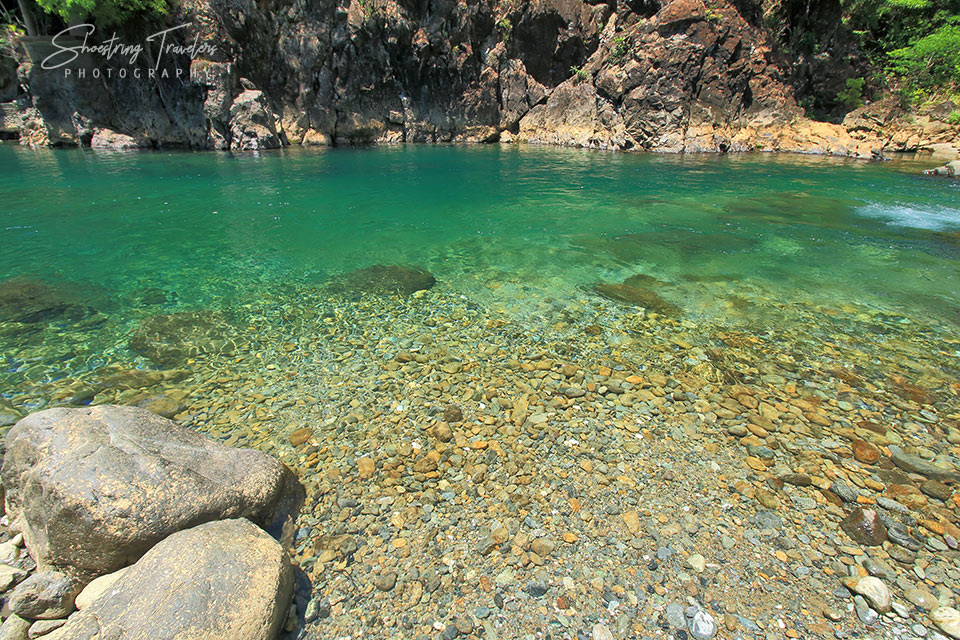
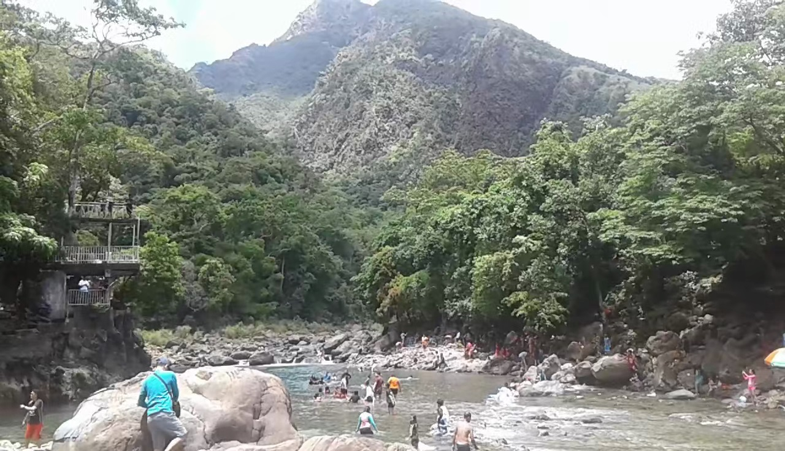
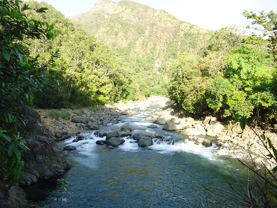
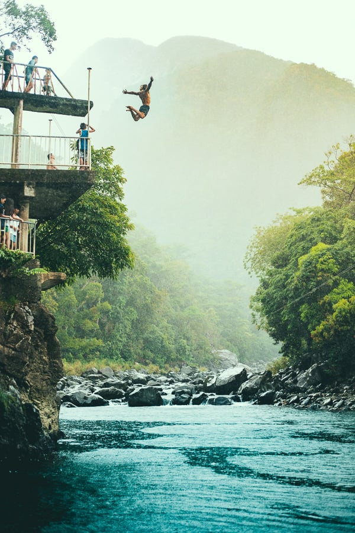

Discover the Natural Beauty of Cantingas River
Located in Sibuyan Island, Cantingas River is known for its crystal-clear waters, refreshing natural pools, and lush surroundings. It is one of the cleanest rivers in the Philippines and serves as the main water source for the island.
Photos




Why Visit Cantingas River?
- One of the cleanest rivers in the Philippines
- Refreshing natural pools perfect for swimming
- Surrounded by lush greenery and mountains
- Popular jumping and diving spots for thrill-seekers
- A perfect place for picnics and relaxation